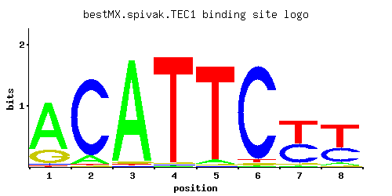

TEC1
YBR083W, ROC1
Transcription factor required for full Ty1 expression, Ty1-mediated gene activation, and haploid invasive and diploid pseudohyphal growth; TEA/ATTS DNA-binding domain family member
Best-performing DNA-binding model.

View and copy the recommended matrices ↘
A | 0.745 0.090 0.960 0.010 0.040 0.010 0.010 0.055 C | 0.025 0.890 0.010 0.010 0.010 0.945 0.440 0.358 G | 0.220 0.010 0.020 0.010 0.010 0.020 0.045 0.025 T | 0.010 0.010 0.010 0.970 0.940 0.025 0.505 0.562
A | 74 9 96 1 4 1 1 5 C | 2 89 1 1 1 94 44 35 G | 22 1 2 1 1 2 4 2 T | 1 1 1 97 94 2 50 56
A | 0.85 -1.27 1.10 -3.47 -2.08 -3.47 -3.47 -1.76 C | -1.97 1.60 -2.89 -2.89 -2.89 1.66 0.89 0.69 G | 0.20 -2.89 -2.20 -2.89 -2.89 -2.20 -1.39 -1.97 T | -3.47 -3.47 -3.47 1.11 1.08 -2.55 0.46 0.56
Alternative candidate matrices 12
Historical matrix candidates from the original ScerTF database. Expand a source to inspect its original logo, scores, and matrix values.
TEC1Badis et. al.P = 6.77e-07View matrix ↘
TEC1_AFoat et. al.P = 2.28e-07View matrix ↘
TEC1_BFoat et. al.P = 8.85e-07View matrix ↘
TEC1_CFoat et. al.P = 1.91e-08View matrix ↘
TEC1_DFoat et. al.P = 0.002128View matrix ↘
TEC1_EFoat et. al.P = 1View matrix ↘
TEC1_FFoat et. al.P = 0.06845View matrix ↘
TEC1Harbison et. al.P = 5.85e-08View matrix ↘
TEC1Macisaac et. alP = 2.75e-08View matrix ↘
TEC1Pachkov et alP = 0.01147View matrix ↘
TEC1Zhu et. al.P = 3.63e-09View matrix ↘
TEC1Zhao and StormoP = 3.20e-08View matrix ↘
Gene-level annotations and interactions.
Genes bound in ChIP-chip experiments 114 genes
YAL028W, YAL029C, YAL041W, YAL043C-A, YAR010C, YAR014C, YAR015W, YBL016W, YBL017C, YBL107W-A, YBR012W-A, YBR012W-B, YBR048W, YBR082C, YBR083W, YBR099C, YCL027W, YCL055W, YCL056C, YDL013W, YDL126C, YDL127W, YDR040C, YDR041W, YDR074W, YDR207C, YDR208W, YDR210W, YDR210W-C, YDR240C, YDR309C, YDR316W-A, YDR316W-B, YDR317W, YDR463W, YDR522C, YDR544C, YDR545W, YEL040W, YER118C, YER120W, YER189W, YER190W, YFL039C, YGL001C, YGL032C, YGL062W, YGR007W, YGR014W, YGR027W-A, YGR027W-B, YGR038C-A, YGR039W, YGR199W, YGR221C, YHR001W, YHR005C, YHR084W, YHR091C, YHR141C, YHR142W, YIL119C, YIL123W, YJL145W, YJL186W, YJL187C, YJR054W, YKL095W, YKL096W, YKL096W-A, YKL097C, YKL104C, YKR041W, YKR061W, YKR091W, YLL015W, YLL065W, YLR046C, YLR084C, YLR413W, YLR452C, YLR463C, YLR465C, YLR467W, YML058C-A, YMR014W, YMR199W, YNL053W, YNL087W, YNL145W, YNL279W, YNL280C, YNL282W, YNL283C, YNL289W, YNL337W, YNL338W, YNL339C, YNR028W, YNR044W, YOL007C, YOR086C, YOR087W, YOR088W, YOR126C, YOR127W, YOR246C, YOR247W, YOR248W, YOR315W, YPL163C, YPR091C, YPR137C-A, YPR137C-B
Genes affected by TF deletion 353 genes
YDR034C-C, YDR366C, YGL205W, YIL080W, YIL112W, YKR075C, YMR045C, YML117W-A, YMR046W-A, YNL018C, YNL052W, YOL013W-A, YOL045W, YOR192C-A, YOR223W, YAL007C, YGL039W, YHR146W, YKL078W, YMR220W, YMR192W, YOR377W, YCR057C, YBL085W, YDR034C-A, YDR005C, YDR034C-D, YDR365W-B, YMR042W, YMR046C, YOL048C, YOR190W, YOR192C-B, YDL125C, YGR122C-A, YHR145C, YLR433C, YLR466W, YPL016W, YBL034C, YDL171C, YCR076C, YGL262W, YLR374C, YMR107W, YOL104C, YOL106W, YPL283C, YDR276C, YJL215C, YKL141W, YLR152C, YLR184W, YLR156W, YLR157C-A, YML089C, YPL142C, YBR093C, YDR159W, YDR098C-A, YGR064W, YJL015C, YKR102W, YLL027W, YOL103W-B, YOL105C, YCL020W, YDR340W, YDR281C, YGR183C, YIL051C, YML058W, YMR251W-A, YMR287C, YNR027W, YPL077C, YPL109C, YPL083C, YGR296W, YGR166W, YJL131C, YBL091C-A, YBR012W-B, YCR019W, YHR001W-A, YHR003C, YIL122W, YJR026W, YJR028W, YJR093C, YJR030C, YLR256W, YLR227W-A, YMR050C, YMR053C, YNR067C, YOR235W, YBL004W, YKL098W, YNL163C, YAR010C, YEL022W, YEL024W, YEL056W, YGR161C-C, YGR103W, YGR161W-A, YKL056C, YLR410W-B, YMR173W, YNL221C, YNL253W, YNL284C-A, YOR075W, YPL160W, YBR012W-A, YBR043C, YCR017C, YCR018C-A, YDR015C, YDR045C, YDR409W, YIL087C, YJR025C, YJR027W, YJR029W, YJR061W, YLR281C, YLR256W-A, YMR017W, YMR051C, YMR023C, YNL054W-A, YNL055C, YNR066C, YOR234C, YPL186C, YPL218W, YPL249C-A, YER060W-A, YJR148W, YLL008W, YAR009C, YBR230C, YDL105W, YDR255C, YGR161C-D, YGR104C, YGR161W-B, YJL090C, YLR035C-A, YLR067C, YLR099C, YLR407W, YLR437C, YML003W, YLR410W-A, YML007W, YOR072W, YPR121W, YPR091C, YPR123C, YPR152C, YGL153W, YOL084W, YPL280W, YHR214C-B, YIL060W, YOR142W-A, YCR083W, YDL040C, YDR169C, YDR170W-A, YFL050C, YGR038C-A, YGR040W, YIR010W, YKL021C, YLR312C, YLR343W, YLR345W, YNL182C, YNL124W, YOL115W, YOR324C, YOR354C, YOR296W, YPR055W, YBL059C-A, YBL061C, YDL231C, YDR283C, YDR316W-A, YER037W, YER093C, YGL144C, YHR214C-C, YHR214W-A, YJL186W, YLR189C, YLR161W, YIL064W, YJR003C, YBR046C, YDR448W, YGL187C, YGR294W, YLR264W, YPL191C, YPL227C, YPL257W-A, YMR143W, YBR205W, YBR209W, YDR261W-A, YDR266C, YHR196W, YJL069C, YKL127W, YLR040C, YLR042C, YML010C-B, YOR051C, YPL066W, YBL101W-A, YER159C-A, YOR268C, YPL220W, YAL018C, YAR020C, YGR139W, YJL064W, YKL095W, YLR415C, YMR173W-A, YOR082C, YOR392W, YBR110W, YDL048C, YDR148C, YHR071W, YJL004C, YLR356W, YLR388W, YOL124C, YOR300W, YPR002W, YPR042C, YDR298C, YER072W, YHR219W, YLR140W, YML043C, YML045W-A, YBR083W, YJL005W, YJR158W, YNL160W, YOL155C, YPR002C-A, YNL316C, YBL005W-A, YDL173W, YDL205C, YDL175C, YDL207W, YDL209C, YER066C-A, YER069W, YER044C, YGL092W, YGL124C, YGL156W, YIL065C, YJL160C, YJL166W, YKL185W, YKL218C, YKL187C, YKL220C, YML040W, YMR303C, YNR040W, YOR142W-B, YOR178C, YOR118W, YOR148C, YOR180C, YBR054W, YER138C, YJR044C, YLR297W, YOL068C, YNL054W, YDR210W-D, YDR274C, YGR117C, YHR136C, YBL107W-A, YCR031C, YFL002W-B, YER137C-A, YER138W-A, YER169W, YHL005C, YIL165C, YLR300W, YMR034C, YNL070W, YPL257W-B, YPL234C, YBR180W, YBR212W, YDR210W-A, YDR239C, YDR267C, YDR210W-C, YDR241W, YDR269C, YDR211W, YEL039C, YHR135C, YKL069W, YLR427W, YMR211W, YMR185W, YPL075W, YPR158W-B, YCR099C, YCR101C, YDL056W, YDR486C, YDR488C, YGR027C, YHR079C-A, YLR364W, YLR334C, YMR158C-B, YOL103W-A, YOL134C, YOL166C, YOR343C-B, YPR044C, YDR365W-A, YIL011W, YFL068W, YGR027W-A, YLR395C, YOR372C, YOR343C-A, YPR041W, YGL130W, YJL168C
Genes supported by both experiments 12 genes
YAR010C, YBL107W-A, YBR012W-A, YBR012W-B, YBR083W, YDR210W-C, YDR316W-A, YGR027W-A, YGR038C-A, YJL186W, YKL095W, YPR091C
Predicted TF–TF partners 2 genes
UPC2, YER130C